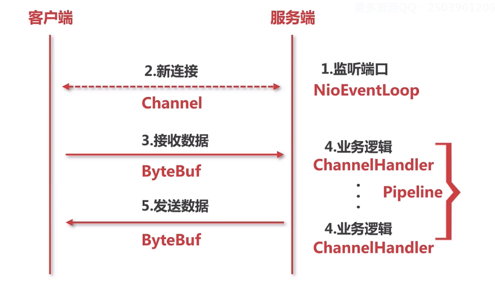

Netty基本组件
netty中于对于原始socket相对应的概念

NioEventLoop（Nio事件循环）
监听以下两种
- 新连接的接入
- 数据的读写
Channel
表示连接。对应于在IO中的Socket，NIO中则是SocketChannel。实际上就是Socket的抽象。
ByteBuf
封装了一些接受发送数据的API
ChannelHandler
对二进制协议进行数据包的拆分，转换为Java类型等，服务端对数据的逻辑。
PipeLine
逻辑的处理链。ChannelHandler的集合
NioEventLoop
NioEventLoop对应示例代码中的两个Thread：接听连接的线程，进行读写的线程
以下基于源码位置io.netty.channel.nio.NioEventLoop#run
对于获取新连接的ServerSocket.accept()和数据的读写socket.getInputStream()对应的都是SELECT的操作
1 | case SelectStrategy.SELECT: |
相当于用select拿到用户的socket，processSelectedKeys();对这个socket（channel）进行处理，
Channel
一个Channel对应一个Socket。一个channel是如何被创建的？
以下基于源码io.netty.channel.nio.NioEventLoop#processSelectedKey(k,ch)。继续跟踪NioEventLoop的处理流程，会看到：
1 | //OP_ACCEPT ： 一个accept事件 |
在unsafe.read();中调用了io.netty.channel.socket.nio.NioServerSocketChannel#doReadMessages，在里面把新连接加入到了一个数组里：
1 | SocketChannel ch = javaChannel().accept(); |
ByteBuf
ByteBuf对应于IO bytes。io.netty.buffer.ByteBuf中有很多read，write开头的方法。
PipeLine
PipeLine相当于逻辑链。什么时候把PipeLine加入到channel处理过程中的？
追踪NioSocketChannel(this, ch)的构造方法的父类，最后会到：
1 | protected AbstractChannel(Channel parent) { |
newChannelPipeline()之间返回新建的io.netty.channel.DefaultChannelPipeline#DefaultChannelPipeline：
1 | protected DefaultChannelPipeline(Channel channel) { |
ChannelHandler
一个ChannelHandler对应一个逻辑。io.netty.channel.DefaultChannelPipeline中就提供了很多add，remove开头的方法，提供给pipeLine添加这些ChannelHandler。比如addAfter()的参数就能带入一个ChannelHandler。
总结
NioEventLoop
netty的发动机，对应于socket编程中连接和读写的两个线程Channel
对于连接的封装，在这个里面进行数据的读写- pipeLine
逻辑的处理链 - ChannelHandler
逻辑的处理链中的逻辑 - ByteBuf
数据流的读写的封装